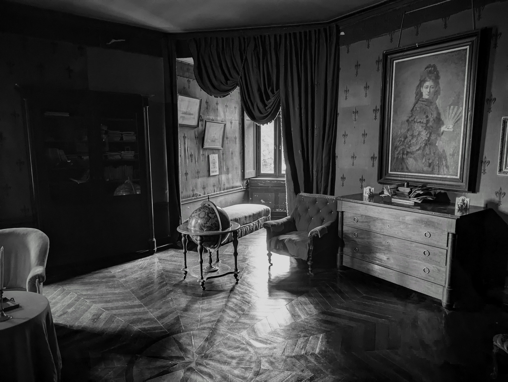

ROBERT LItechnical game designer |
|||
| Discord |
Vessel is a 3D puzzle game that invites you to explore the ruins of an ancient civilization that once wielded the power of Water.
Guided by a network of static cameras, you'll navigate intricate environments filled with secrets waiting to be uncovered.
You play as a broken pot, resurrected by a mystical water spirit and granted the extraordinary ability to SWAP-a power that lets your exchange places of the water spirit with pieces in your surroundings. With this newfound ability, embark on a journey to reclaim your missing pieces and unravel the forgotten mysteries of a world shaped by water.

a rhythm game launching on iOS and Android. 150,000 Wishlists on TAPTAP
Three people: One artist, one composer/producer, one engineer
Three countries: China, France, The US
2 Years of Development, 5 Exhibitions.

an 3D AI chatbot friend oniOS
I oversee the overall production of the product, and the animation production pipeline for the character.
This document uses a few extra classes here and there, but mostly it’s just markup. This, for instance, is a regular paragraph.
Look at this horizontal break:
Lovely. We can hide stuff in the <details>
element:
This is a plain old bulleted list:
Ordered lists look pretty much as you’d expect:
It’s nice to visualize trees. This is a regular unordered list with a
tree class:
/dev/nvme0n1p2
We can use regular tables that automatically adjust to the monospace grid. They’re responsive.
| Name | Dimensions | Position |
|---|---|---|
| Boboli Obelisk | 1.41m × 1.41m × 4.87m | 43°45�?0.78”N 11°15�?.34”E |
| Pyramid of Khafre | 215.25m × 215.25m × 136.4m | 29°58�?4”N 31°07�?1”E |
Note that only one column is allowed to grow.
Here are some buttons:
And inputs:
And radio buttons:
Add the grid class to a container to divide up the
horizontal space evenly for the cells. Note that it maintains the
monospace, so the total width might not be 100%. Here are six grids with
increasing cell count:
If we want one cell to fill the remainder, we set
flex-grow: 1; for that particular cell.
We can draw in <pre> tags using box-drawing
characters:
╭─────────────────�?�?MONOSPACE ROCKS �?╰─────────────────�?/code>To have it stand out a bit more, we can wrap it in a
<figure> tag, and why not also add a
<figcaption>.
┌───────�?┌───────�?┌───────�?│Actor 1�?│Actor 2�?│Actor 3�?└───┬───�?└───┬───�?└───┬───�? �? �? �?
�? �? msg 1 �?
�? │────────►│
�? �? �?
�? msg 2 �? �?
│────────►│ �?
┌───┴───�?┌───┴───�?┌───┴───�?│Actor 1�?│Actor 2�?│Actor 3�?└───────�?└───────�?└───────�?/pre>
Example: Message passing.
Let’s go wild and draw a chart!
Things I Have
�? ████ Usable
15 �? �? ░░░░ Broken
�?12 �? �?
�? �?
�? �? �?
9 �? �? �?
�? �? �?
�? �? �? �? 6 �? �? �? �? �? �? �? �? �? �? �? �? �? �? �? 3 �? �? �? �? �? �? �? �? �? �? �? �? �? �? �? 0 └───▀─────────▀─────────▀──────────▀─────────────
Socks Jeans Shirts USB Drives
Media objects are supported, like images and video:

They extend to the width of the page, and add appropriate padding in the bottom to maintain the monospace grid.
That’s it for now. I’ve very much enjoyed making this, pushing my CSS chops and having a lot of fun with the design. If you like it or even decide to use it, please let me know.
The full source code is here: github.com/owickstrom/the-monospace-web
Finally, a massive shout-out to U.S. Graphics Company for all the inspiration.